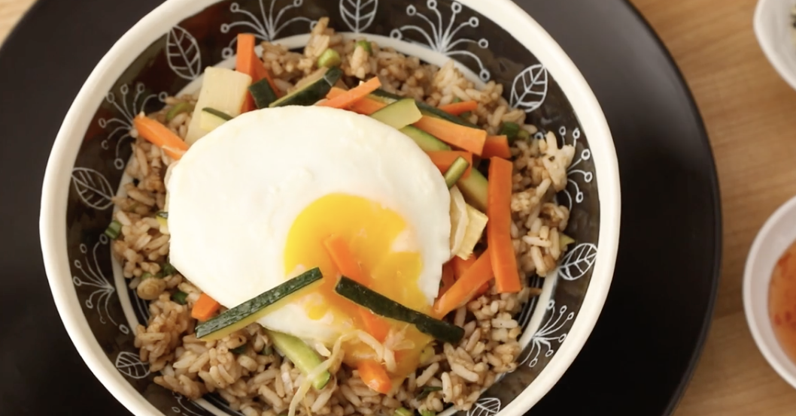

Vegetarian Bibimbap

A vibrant Korean rice bowl topped with seasoned veggies, marinated tofu,
and a spicy gochujang sauce—perfectly balanced and full of flavor.
Ingredients
- 2 tablespoons sesame oil
- 1 cup carrot matchsticks
- 1 cup zucchini matchsticks
- ½ (14 ounce) can bean sprouts, drained
- 6 ounces canned bamboo shoots, drained
- 1 (4.5 ounce) can sliced mushrooms, drained
- ⅛ teaspoon salt to taste
- 2 cups cooked and cooled rice
- ⅓ cup sliced green onions
- 2 tablespoons soy sauce
- ¼ teaspoon ground black pepper
- 1 tablespoon butter
- 3 eggs
- 3 teaspoons sweet red chili sauce, or to taste
Directions
- Step One: Heat sesame oil in a large skillet over medium heat; cook and stir carrot
and zucchini in the hot oil until vegetables begin to soften, about 5 minutes. Stir in bean sprouts, bamboo shoots, and mushrooms. Cook and stir until carrots are tender,
about 5 more minutes. Season to taste with salt and set vegetables aside.
- Step Two: Stir cooked rice, green onions, soy sauce, and black pepper in the same skillet until the rice is hot.
In a separate skillet over medium heat, melt butter and gently fry eggs,
turning once, until the yolks are still slightly runny but the egg whites are firm, about 3 minutes per egg.
- Step Three: To serve, divide hot cooked rice mixture between 3 serving bowls and top each bowl with 1/3
of the vegetable mixture and a fried egg. Serve sweet red chili sauce on the side for mixing into bibimbap.
ENJOY !!!